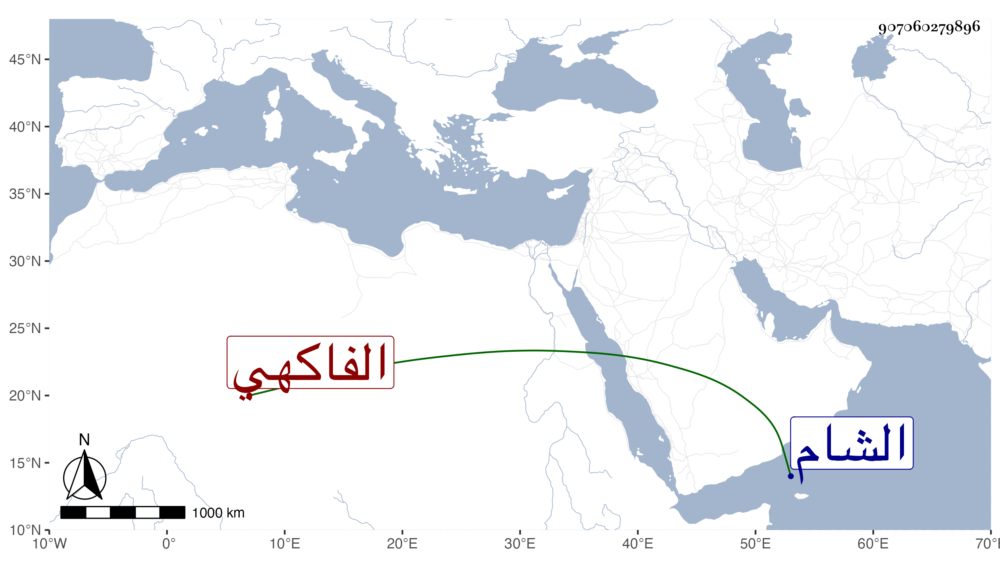

0902Sakhawi.DawLamic.ITO20230111-ara1.EIS1600.907060279896
Biography ID: 907060279896
الفاكهي نسبة للفاكهة علي بن محمد بن علي بن محمد بن عمر بن عبد الله واخوته المحمدون أبو القاسم وأبو الخير وأبو البركات وهم أشقاء شافعية إلا الأخير وفي الترتيب هكذا وأولهم موتا أبو القسم ثم نور الدين علي ثم أبو البركات بطريق الشام وبنو أولهم أبو السعادات وأحمد وست الأهل وأبو القاسم مات هو والأول وبنو ثالثهم جماعة سمع مني بعضهم وانقطع نسل أبي القسم وكذا أبو البركات وعم علي واخوته أبو الخير محمد بن علي وأخواه أحمد ومحمد ولآخرهم ثلاثة عبد الرحمن وإبرهيم وعبد الله ولم يتأخر غيره وليسوا بأشقاء ولأحمد محمد .
